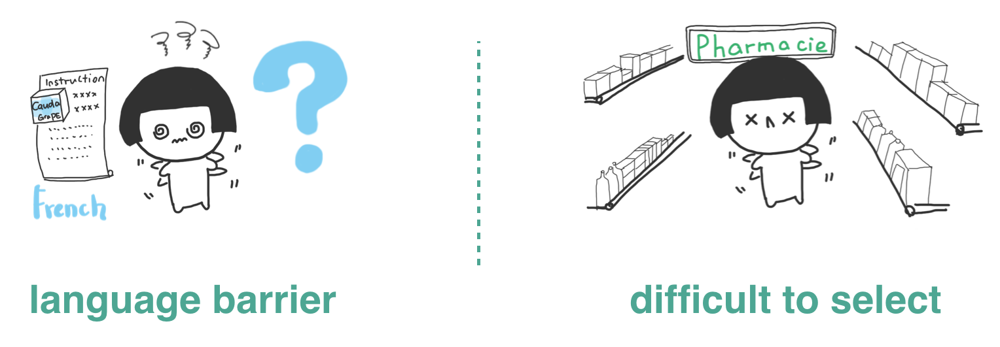
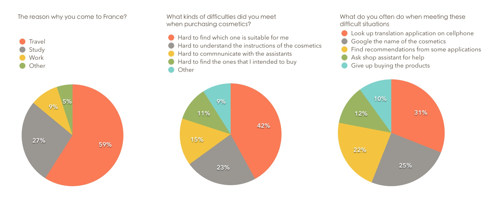
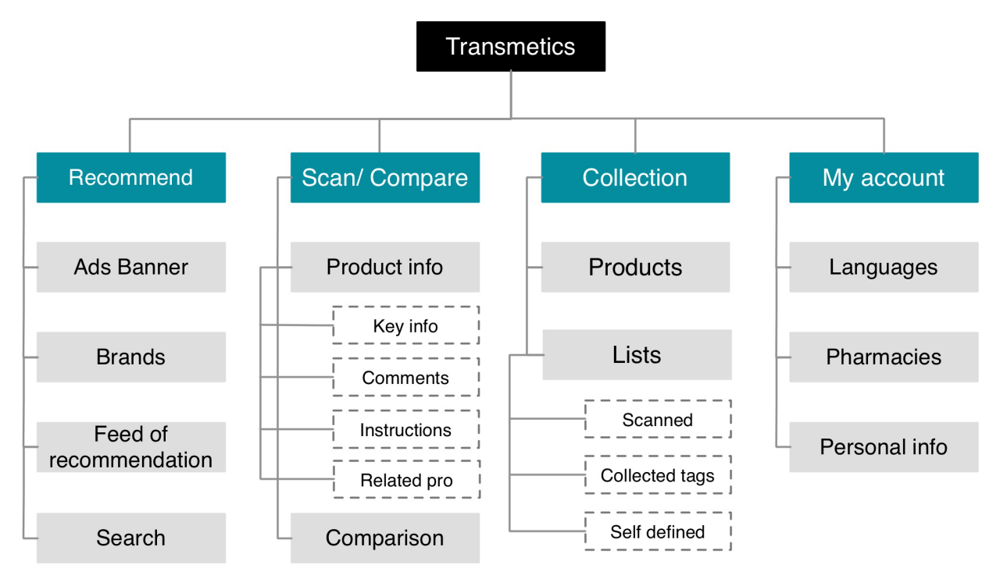
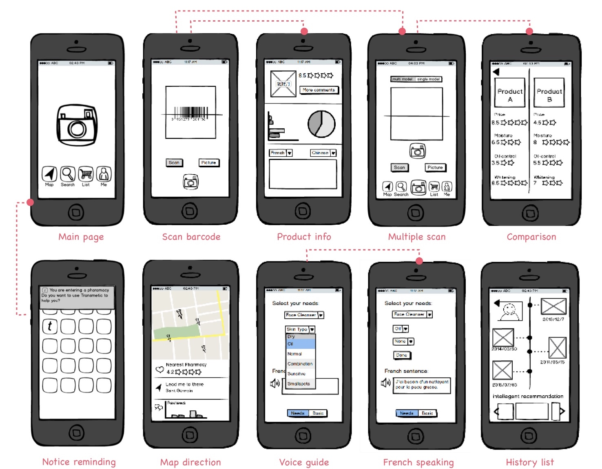
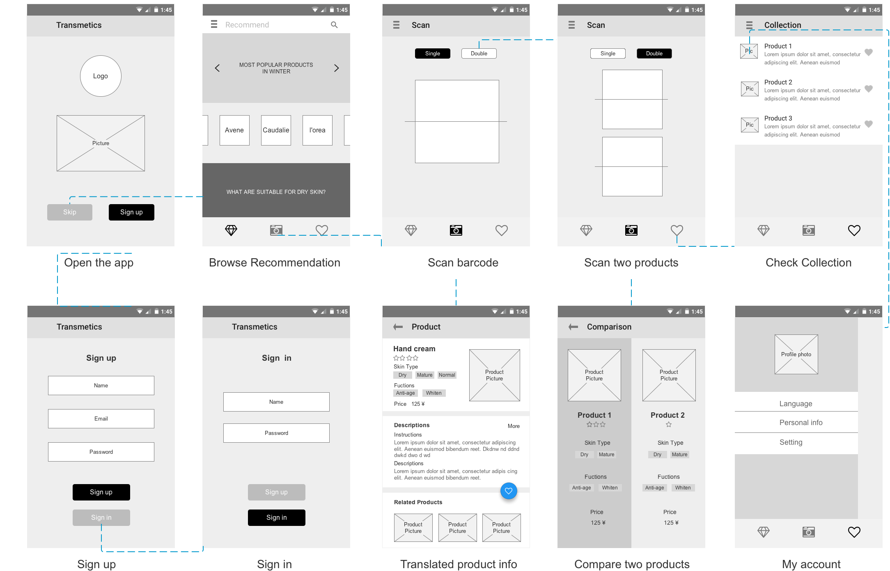
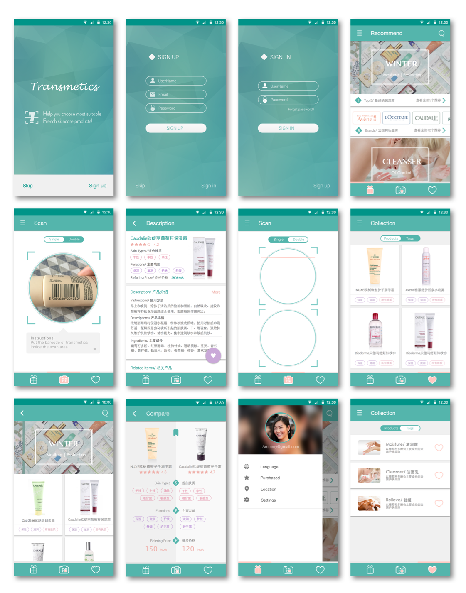
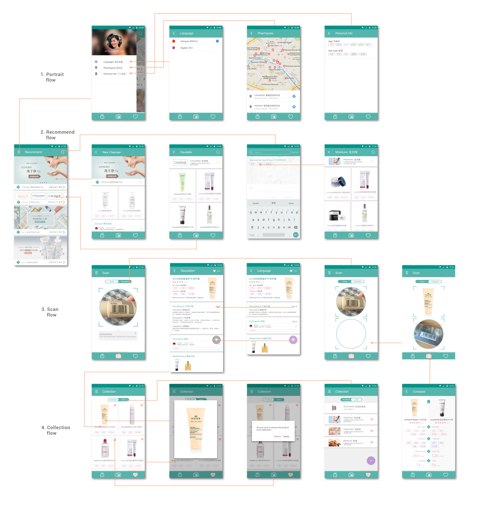

VIDEO PITCH
UNDERSTAND PROBLEMS
Current French skin care products only have French descriptions on package, making it hard for non-native French speakers to understand. What's more, People find it hard to seek for cosmetics that are suitable for their skin type. Starting from the problem, we conducted questionnaires and interviews to know more about our target users.

QUESTIONNAIRE
To figure our who is our target user and what are main problems we need to solve. Gave away both Chinese and English version of questionnaires in front of a local pharmacy. Our target users were non-French speakers including Chinese and English-speaking people from other countries. Total number: 35. The key findings were as below.

INFO-ARCH
According to users' needs, I structured and organized information architecture (functions) of the App. At beginning, I added all the functions that users want to use in the app (Recommend, scan, comparison, voice guide, notification of pharmacy, map navigation). However, from first user test using wireframe 1.0, we found users couldn't manage to use all the functions. So I removed some functionalities and kept the most important functions for users. The final information architecture is shown below.

WIREFRAMING
After buttoning down the Information Architecture, I started sketching and wireframing. Wireframe 2.0 was made in Axure with user interaction. It emphasized the important functions and had clear use flow and detailed interface.

Wireframe 1.0

Wireframe 2.0
UI DESIGN
Based on the wireframe created before, I designed the UI and created a prototype for the usability test later. The visual key words are "Natural" and "Delightful", which I tried to apply in the design language.

USABILITY TEST
Using the prototype created, 12 usability tests were conducted on cellphone in pharmacy.
The test arrangements is as below.
-First try out the application and get to know the main functions at the bottom navigation as well as the layouts of contents. ( Preparation )
-Scan the barcode of a skin care product, then find information you want to know about the product.
-Scan the barcodes of two skin care products, choose one you prefer according to comparison information offered in the application.
-Find the Caudalie grape moisture cream in the recommendation page, and save it to collection list.
-Find the products under the tag of Moisture and check the collection list.
After finishing the tasks, I conclude the feedbacks from the users as well as the ways of improvements.Findings
1. Users have misunderstand of "double scan".
2. Want to see comments from other users.
3. Want to have the map of nearest shop.
4. Want to see high resolution picture of the product.
DESIGN ITERATION
According to the user feedbacks, we did design iteration and improved the interface as well.
1. Changed "double scan" to "compare".
2. Add comments in product page.
3. Add map of nearest shop in my account.
4. Show high resolution picture when click product picture.
